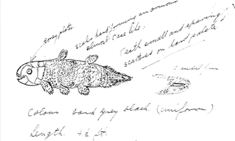

コートニー＝ラティマーは、岩石、羽、貝殻その他博物館に適当な物を集めて忙しくしていたが、漁師たちには知られていた珍しい生物を見たいと思うようになった。1938年12月22日、それらしい魚がかかったという電話を受け、Hendrik Goosen 船長の水揚げを検分しに波止場に向かった。「幾層にもなった粘着物をはぎ取っていくと、今まで見たこともない美しい魚が現れました。長さは5フィート（150cm）ほど、わずかに紫がかった薄い青色で、かすかな白い斑点が散らばっていました。全体を覆っていたのは銀色から青を経て緑に至る虹のような光沢です。全身は硬い鱗で覆われ、4本の脚のようなヒレと、子犬のような変わった尻尾がついていたのです」。
コートニー＝ラティマーはその魚をタクシーで博物館まで運び、自分の所有する資料に記載がないか探したが見つけることはできなかった。魚はぜひとも保存しておきたかったが博物館に設備がなく、死体置き場へ運んだものの受け入れは断られた。コートニー＝ラティマーは友人でローズ大学で教えていた魚類学者ジェイムズ・レナード・ブリアリー・スミス（英語版）にコンタクトを取り同定の助けを得ようとしたが、長期不在であったためやむなく剥製師に頼んで内臓を抜き去り剥製にした。
1939年2月16日にやっと到着したスミスにはすぐさま魚がシーラカンスであるとわかった。「疑問の余地はありませんでした。それはまさしく2億年前の生物が1体、再びよみがえってきたのに違いありませんでした」。スミスはその魚に Latimeria chalumnae という学名を与えることになった。Latimeria は友人であるコートニー＝ラティマーから、chalumnae は発見地である Chalumna River からとったものである。2匹目のシーラカンスが見つかるのはそれから14年後のことであった。
1938年、スミスはイーストロンドン博物館の学芸員マージョリー・コートニー・ラティマーから、珍しい正体不明の魚の発見を知らされた。1939年2月にイーストロンドンに到着したスミスは、当時6500万年以上前に絶滅したと考えられていたシーラカンスであることをすぐに特定し、彼女にちなんでその種をラティメリアと名付けた。1952年12月、スミス教授はコモロ諸島沖でアハメド・フセイン[ 5 ]という漁師が捕獲した別の標本を入手した。地元の貿易業者エリック・ハントがスミスに電報を送り、スミスは南アフリカ政府を説得して、SAAFのダコタ機でグラハムズタウンに飛んで保存された魚を研究するために現地入りした[ 6 ]。
フランスの科学者ルイ・アガシーは、1839年に出版した著書『化石魚類』（Poissons Fossiles ）の中で、シーラカンスの化石群について記述している。
彼は、尾びれ（背骨）から突き出た特徴的な中空の棘にちなんでこの名前を選んだ。ギリシャ語の「coel」（空間）と「acanthus」（棘）に由来する「シーラカンス」という言葉は、「中空の空間」を意味する。
古代のシーラカンスには、体長がわずか数センチメートルから約30センチメートルまで、さまざまな大きさの種が数多く存在したが、それらはすべて現代のシーラカンスとほぼ同じ形状と体型をしていた。
シーラカンスは肉鰭綱と呼ばれる脊椎動物の綱に属し、そのため、現存するもう一つの原始的なグループである肺魚と近縁関係にある。（ただし、シーラカンスとは異なり、肺魚は水から出されると空気呼吸ができる。）
化石のシーラカンスはすべて、非常に筋肉質に見える四肢のような付属肢を持っていたことから、初期の古生物学者の中には、シーラカンスが海洋動物と陸上動物の間の「ミッシングリンク」である可能性を考えた者もいた。（この考えは、1859年にチャールズ・ダーウィンの『種の起源』が出版された後に生まれた。）
しかし、このシナリオの問題点は、シーラカンスが生涯を通じて水から出て生活していたという確かな証拠が全くないこと、あるいは恐竜が絶滅した約6500万年前の白亜紀末期を生き延びていたという証拠が全くないことだった。
しかし1938年、彼らが生き延びていたことが世界に知られることになった。
そして、彼らは間違いなく両生類ではなかった…。
1938年12月、イーストロンドンの西、チャルムナ川河口沖で冷水湧昇が発生し、網を引き上げていたアービン＆ジョンソン社の漁船「ネリン号」の船長ヘンドリック・ゴーセンは、これまで見たこともないような巨大で鮮やかな青色の魚を発見した。この湧昇は、しばしば珍しい魚を捕獲し、通常はイーストロンドン博物館の学芸員マージョリー・コートニー＝ラティマーに寄贈していた。
それはまだ生きていたが、体長150cm、体重57.5kgもあり、船に搭載された水槽には大きすぎて入らなかった。
他に選択肢はなかった。彼はそれを甲板に放置したが、それはほんの数時間しか生き延びなかった。
東ロンドンに到着するとすぐに、船長はコートニー＝ラティマー嬢を呼び寄せた。彼女はすぐに、船長が何か重要なものを見つけたことに気づいた。
彼女はその魚のスケッチを描き、ナイズナにある別荘に住んでいたJLBスミス教授に郵送し、魚の種類を特定してもらえるよう依頼した。
その手紙は1939年1月3日にスミス教授のもとに届いた。彼はそれが何であるかを即座に理解したようだが、同時に、それを適切に科学的に記述するためには、その軟組織が必要であることも理解していた。
彼はコートニー＝ラティマーさんに電報を送り、標本を救うよう頼んだが、時すでに遅しだった。標本が腐敗し始めた頃には、彼女は標本を取り外して捨ててしまっていたのだ。
しかし、彼はそれを見なくても、それが肉鰭類（ Sarcopterygii ）の一種であり、おそらくシーラカンスであると確信していた。
これは驚くべき発見だった。アガシーはそれらを北半球の浅い淡水域に生息する比較的小型の魚と記述していたが、この個体は体長150センチメートルにも達し、南半球の深海の塩水域に生息していたのだ。
大雨やその他の遅延に苛立ち、スミス教授は魚が捕獲されてから6週間後になってようやく初めてその魚を目にすることができた。
彼はそれをマージョリー・コートニー・ラティマーとチャルムナ川にちなんでラティメリア・チャルムナエと名付け、世界はその花に夢中になった。
JLBスミスと魚の写真が世界中の新聞に掲載され、イーストロンドン博物館で行われた標本の一日展示には2万人もの人々が集まったと言われている。
JLBスミスとマージョリー・コートニー＝ラティマーの間で交わされた手紙の全文はpbs.orgで読むことができます。
スミス教授は、2つ目の標本を見つけることに執着するようになった。一つには、最初の標本の柔らかい内部組織が失われていたため、完全な動物学的記述を書くことができなかったからであり、もう一つは、彼らが実際にどこに生息しているのかを知りたかったからである。
彼は、イーストロンドンで見つかった魚は迷い込んだもので、おそらく冷たい水によって生息域から追い出されたのだろう、そしてもっと北の暖かい海域から来た可能性が高いと推測した。
彼はアフリカ東海岸沿いを広範囲に旅し、常に別の標本を探し求めていた。
彼は戦争中にこの活動を断念せざるを得なかったものの、その任務への情熱は衰えることなく、1945年の終戦後も活動を続けた。
1948年、彼は捜索地域でビラを配布し、2匹目のシーラカンスを捕獲した者に100ポンドの報奨金を提供すると告知した。
エリック・ハント船長がコモロ諸島でこれらのチラシを配布したところ、案の定、1952年12月20日、アハメド・フセインという名の漁師がアンジュアン島沖約200メートルの地点で手釣りでシーラカンスを捕獲した。
フセイン氏は自分の釣った魚をハント船長のところに持って行き、報酬を受け取るのを手伝ってほしいと頼んだ。
ハント船長は、以前スミス教授とその妻マーガレット（彼女も魚類学者だった）と話し合ったことから、魚とその軟組織を保存することが不可欠だと分かっていた。彼はできる限りのことをできるだけ早く行い、その後、グラハムズタウン大学のスミス教授のオフィスに電報を送った。しかし、教授は不在だった。東海岸で魚類採集の旅に出ており、ダノター・キャッスル号で帰路についている最中だったのだ。
その電報はダーバンに転送され、教授は12月24日に現地に到着した際にその知らせを受け取った。
当時、南アフリカとコモロ諸島の間には定期便がなく、スミス教授はチャーター機を見つけることができなかった。そこで、クリスマス当日、この機会を逃したくない一心で、彼は南アフリカの首相であるDF・マランに電話をかけ、軍用ダコタ機を派遣してもらい、魚を採取して研究室に持ち帰り解剖できるように説得した。
意外なことに、首相は同意した。
サマンサ・ワインバーグは著書『A Fish Caught in Time』（Fourth Estate、ロンドン、1999年）の中で、南アフリカ空軍がモザンビーク当局から、領空を横断する軍事飛行とロウレンソ・マルケスでの燃料補給の両方について許可を得なければならなかった経緯を詳述している。
ワインバーグは、ダーバンの警官の一人が、飛行当日の午前2時にロウレンソ・マルケスの政府関係者に電話をかけたと記している。
「了解」とロウレンソ・マルケスの男は言った。「それで、この飛行の任務は何ですか？」
「ダーバン」「魚を捕まえるため。」
LM：「今、何て言ったの？魚だって？」
ダーバン：「ええ、魚です。」
LM：「鱗のあるものってこと？」
ダーバン：「了解。」
「LM：「まさか、我が国の政府がそんなことを信じると思っているのか？ 我々の兵士を馬鹿だと思っているのか？ 軍用機で我々の領土を侵犯したい理由について、もっとましな言い訳は考えられないのか？」
しかし政府は許可を与え、スミス教授は1952年12月28日にアンジュアン島に上陸した。
2番目の標本は最初の標本とは異なっているように見えた。ラティメリア属の魚類のように背びれが2つなかったため、スミス教授はそれをマラニア・アンジュナエ（マラニア首相と、その魚が発見された島にちなんで）と名付けた。しかし、その後の詳細な調査で、これは誤りであり、実際にはラティメリア・チャルムナエであることが判明した。単に前びれを失っていただけで、おそらくまだ幼魚の頃に負傷したためだろう。
コモロ諸島を出た後、ダコタ号はケープタウンに向かった。教授が首相に自分の受賞品を披露するためだった。
途中、ナイズナ上空を低空飛行しながら、彼らはスミス家の家を「爆撃」し、教授の最初の結婚相手との間に生まれた息子ボブ宛ての手紙を投下した。手紙には、ここ数日の出来事が綴られていた。
マラン首相はその魚を検査し、メディアは世界中で報道し、スミス教授はグラハムズタウンに戻り、その後数ヶ月かけて魚の解剖と科学的な詳細な記述に取り組んだ。
1938年のクリスマス3日前、南アフリカの沿岸都市イースト・ロンドンで、地元の自然史博物館の若き黒目キュレーター、マージョリー・コートニー＝ラティマーは、人生を根底から覆し、最終的に彼女の名を国際的に知らしめることになる電話を受けた。その電話をきっかけに、コートニー＝ラティマーと、近郊のグラハムズタウンにあるローズ大学の化学教授でアマチュア魚類学者のJLBスミスとの間で、一連の緊急の手紙のやり取りが始まった。これらの手紙には、彼女が発見し、スミスが確認した、少なくとも6600万年前に絶滅したと考えられていた生物の発見が記録されている。
ここでは、記録史上初めてシーラカンスが発見された後の、目まぐるしい日々を追体験できます。手紙には、驚くべき科学的発見の頂点に立った時の高揚感が鮮やかに伝わってきます。同時に、当時の原始的な通信システムに頼らざるを得なかった二人の苛立ちも伝わってきます。この通信システムの不備は、最終的に適切な科学的手順を著しく損ない、長らく行方不明だったこの魚をトロール船の甲板から科学文献へと無事に導くことができたことを、より一層際立たせています。スペルミスや文法上の誤りを修正したこれらの手紙は、グラハムズタウンにある南アフリカ水生生物多様性研究所の許可を得て転載しています。
コートニー＝ラティマーが受けた電話は、彼女が知っている地元のトロール船団のマネージャーからのもので、博物館の標本になりそうな魚を彼女に調べてほしいという内容だった。コートニー＝ラティマーと助手はタクシーで埠頭に行き、全長115フィートのトロール船ネリン号に乗り込み、山積みの魚（ほとんどがサメ）を調べ始めた。山の中から青いヒレが突き出ているのに気づき、魚とぬめりの層をかき分けて、後に彼女が今まで見た中で最も美しい魚だと評した魚を見つけた。体長約5フィートの、鱗がびっしりと生えた青灰色の生き物で、手足のようなヒレを持っていた。近くに立っていたスコットランド人のトロール漁師は、30年以上漁をしているが、こんな魚は見たことがないと言った。コートニー＝ラティマーもそれが何なのか分からなかったが、何か重要なものだと感じたので、それを穀物袋にそっと入れ、博物館の剥製師ロバート・センターのところへ持ち帰った。彼女はその後、沿岸部の小さな博物館で魚類の名誉学芸員を務めていた友人のJLBスミスに電話をかけたが、彼は不在だった。翌日になっても彼から連絡がなかったので、彼女は彼に手紙を書いた。
南アフリカ 、イーストロンドン。 1938年12月23日
スミス博士へ
昨日、非常に奇妙な姿をした標本が発見されました。トロール船の船長からその話を聞いたので、すぐに標本を見に行き、できるだけ早く剥製師に依頼しました。しかしながら、非常に大まかなスケッチを描いてみましたので、分類についてご助言いただければ幸いです。

それはチャルムナ海岸沖の水深約40ファゾム（約74メートル）の地点でトロール網によって捕獲された。
体は厚い鱗で覆われ、まるで鎧のようである。鰭は四肢に似ており、先端の糸状突起の縁まで鱗で覆われている。背鰭には、それぞれの糸状突起に沿って小さな白い棘が並んでいる。（図中の赤色の線に注目。）
ご意見をお聞かせいただければ大変嬉しいですが、このような説明だけでは判断が難しいことは承知しております。
この季節があなたにとって幸せなものとなりますように。
敬具、
M. コートニー＝ラティマー
クリスマスが過ぎてもスミスからの返事がないため、コートニー＝ラティマーは落胆した。「魚のことしか考えられなかった」と、彼女は 80代後半になってから何年も経って、 『A Fish Caught in Time: The Search for the Coelacanth』（時を捉えた魚：シーラカンスの探求）の著者であるサマンサ・ワインバーグに語った。「毎日郵便受けをチェックし、電話を待っていたが、スミスからは何の連絡もなかった」。
教授は、グラハムズタウンではなく、イーストロンドンから海岸沿いに350マイル南下した、妻と共同所有する海辺の町ナイズナの自宅に滞在していたことが判明した。彼は病気療養と、学生たちの試験採点のためにそこへ行っていたのだ。そのため、コートニー＝ラティマーからの手紙を受け取ったのは1月3日になってからだった。
彼女が手紙に同封していた魚の粗雑なスケッチを見たとき、スミスは後にこう書いている。「まるで脳内で爆弾が炸裂したようだった……。馬鹿なことを言うなと自分に厳しく言い聞かせたが、そのスケッチには私の想像力を捉え、これはこの海に生息する普通の魚とは全く違うものだと告げる何かがあった。」コートニー＝ラティマーが手紙を投函してから11日が経過し、標本に何かあったかもしれないと恐れながら、彼は彼女に電報を送った。「記載された魚の骨格と鰓を極めて重要に保存せよ。」それから彼は家に帰り、彼女に手紙を書いた。
ナイズナより執筆。
1939年1月3日
ラティマー様
23日付のお手紙、拝受いたしました。大変興味深いお話をいただき、ありがとうございます。残念ながら私はグラハムズタウンにいないため、すぐにでもそちらへ伺って魚を見に行くことができません。しばらくの間、留守にする予定です。標本のエラと内臓は大変重要なので、保存しておいていただけたことを願っています。もし全て埋まってしまったとしても、少なくともエラは保存できるかもしれません。
現時点ではその魚の種類を推測することすらできませんが、できるだけ早く見に行くつもりです。
あなたの描いた絵と説明から判断すると、その魚は長年絶滅した種に似ているように思えますが、断定する前にぜひ実物を見たいと思っています。もしそれが先史時代の生物と密接な関係にあると判明すれば、非常に驚くべきことです。それまでは、大切に保管し、決して外部に送らないでください。きっと科学的に非常に価値のあるものだと感じています。
新年のお祝いと
心からのご挨拶を申し上げます。 敬具
JLBスミス
眠れない夜を過ごした後、スミスは電話交換局が開くとすぐにそこへ行き、イーストロンドンに電話をかけた。電話がつながるまで3時間待たなければならず、ようやくコートニー＝ラティマーと話ができた時、彼女は彼の最悪の予感を裏付けた。標本の特定に非常に役立つはずだった魚の内臓は腐敗して捨てられていたのだ。彼は彼女に町がゴミをどこに捨てているのか調べてほしいと頼み、必要であればイーストロンドンまで行って自分でゴミを漁ると言った。しかし、翌日の5日、コートニー＝ラティマーから電話で、町はゴミを海に投棄していると告げられた。「それで終わりだった」と彼は後に嘆いた。「もう二度と戻ってこない」。
その後数日間、スミスは疑念と恐怖に苛まれた。長年、いつか驚くべき動物学的発見をするだろうという確信を抱いていたが、今やその予感が自分を誤った方向へ導くのではないかと恐れていた。「もしそれが私を科学的に愚か者にするだけなら、あの忌まわしい予感に何の意味があるのだろうか？」と、彼は後に著書『 オールド・フォーレッグス：シーラカンスの物語』に記している。「5000万年！シーラカンスが現代人に知られることなく、これほど長い間生きていたとは、とんでもないことだ。」
この恐れは、スミスがすぐにイーストロンドンへ行って自ら発見を確認（または否定）しなかった理由のほんの一例に過ぎなかった。もう一つの理由は、もしその発見が正しければ、科学界に及ぼすであろう爆発的な影響に備えたかったからである。1月5日にコートニー＝ラティマーと話して以来、彼女から何の連絡もなかったスミスは、1月9日に再び彼女に手紙を書いた。
ナイズナ。
1939年1月9日
ラティマー様
あなたの魚のことが心配で、夜も眠れません。遠く離れているのが本当に辛いです。たとえ腐敗寸前だったとしても、魚の軟組織が保存されなかったことを嘆かずにはいられません。残念ながら、軟組織の喪失は動物学における最大の悲劇の一つだと考えています。なぜなら、改めて考えてみると、あなたの魚はこれまで発見されたどの魚よりも原始的な形態であると確信しているからです。それはほぼ間違いなく、中生代初期、あるいはそれ以前に繁栄し、数百万年前に絶滅した種と近縁の鰭類です。このような魚の内部構造については比較的ほとんど知られておらず、軟組織については当然何もわかっていません。化石だけが、それらがどのようなものだったかを知る唯一の手がかりだからです。あなたの魚は、北ヨーロッパやアメリカ大陸で古くからよく見られたシーラカンス科の魚と外見上の特徴を概ね備えています。それが新属か新科かは実際に調べてみないと分かりませんが、動物学界で大きなセンセーションを巻き起こすことは間違いないでしょう。あなたからの手紙を心待ちにしていました。というのも、調査が終わるまでは絶対に剥製にしてはいけないことをご理解いただけていると思うからです。頭蓋骨の構造と顎の骨の相対的な位置関係を明らかにすることが非常に重要です。ところで、浮き袋が部分的に骨化していたかどうか、お気づきになりましたか？ 標本などを旅客列車で送っていただけるかどうか、確認していただきたいとお願いしました。特別な箱を作っていただく必要があっても、私が今イーストロンドンまで行くよりは、その方が安上がりです。標本がきちんと梱包されていれば、傷つくことはありません。私の手元には、これよりも大きな標本を保存したこともある大型の保存槽があります。博物館にもぜひそのような保存槽を用意していただきたいものです。丈夫な亜鉛メッキ鉄板を使えば、配管工でも非常に安価に作ることができます。
もし皮を送る手配が全く不可能だと判断されるなら、私がそちらへ行かざるを得ません。しかし、色々な理由から、できればその旅は避けたいのです。（試験があるのです！）
ここで述べた魚に関する私の意見はあくまで暫定的なものであり、実際に見てみなければ確定できないことをご理解いただきたいと思います。しかし、この標本の動物学的類似性については、おそらく私に同意していただけるでしょう。さて、あなたの手紙を心待ちにしています。もし可能であれば、電報でその魚を輸送できるかどうかをお知らせいただけると幸いです。もし輸送される場合は、100ポンド程度の保険をかけることをお忘れなく。費用はすべて私が負担いたします。
あなたがこの素晴らしいものを手に入れたことを称えて、私は（今のところは私個人として）仮にそれを ラティメリア・チャルムナエと名付けました。もしかしたら新しい科になるかもしれません。
敬具
JLBスミス
この手紙を書いた翌日、スミスはコートニー＝ラティマーから別の手紙を受け取った。日付は1月4日、つまり彼が最後に彼女と話した前日だった。
南アフリカ 、イーストロンドン。
1939年1月4日
スミス博士へ
お電話をいただいた後、すぐに魚の標本の状態を確認しに行きました。祝日のため、電報が届いてから3日後（実際には1日後）になってしまったのは残念ですが、標本が届いてそれが他に類を見ないものだと分かった時、私はできる限りの保存に努めました。しかし、私には作業が重すぎたため、センター氏に依頼し、すべての重労働を彼に任せました。
骨格はなかった。背骨は頭蓋骨から尾まで伸びる、柔らかい白い軟骨のような柱状のもので、直径は1インチほどあり、油で満たされていた。切断すると油が噴き出した。肉は可塑性があり、粘土のように加工できた。胃は空っぽだった。標本の重さは127ポンドで状態は良好だったが、非常に高温だったため、すぐに作業を進めなければならなかった。
エラには細い棘が何列にも並んでいたが、残念ながら体と一緒に捨てられてしまった。
センター氏は標本の組み立てをほぼ終えており、その作業は決して悪くない。鱗片の下に油細胞があるようで、皮からはまだ油が流れ出ている。
鱗は鎧のように深く、しっかりとしたポケットに収まる。（つまり、硬くて重いということだ。）
頭蓋骨は皮膚に埋め込まれていて、センター氏に口を開けた状態で固定してもらいました。舌、つまり硬い口蓋板がここにあります。
私はポイントを失わないようあらゆる手を尽くしましたが、最終的に体とエラを廃棄させてしまったことを考えると、不安でなりません。3日間保管しましたが、あなたから連絡がなかったので、廃棄命令を出しました。
敬具
M. コートニー＝ラティマー
コートニー＝ラティマーは15日にスミスの9日付の手紙を受け取り、翌日スミスに電話をかけて質問に答えた。スミスが再び彼女に手紙を書くまでには、さらに1週間が経過した。
ナイズナ。
1939年1月24日
ラティマー様
あの標本について、またご連絡をお待ちしていました。できるだけ早く写真を送っていただけると大変ありがたいです。月末近くまでそちらに行けるかどうか分かりませんが、魚はもう剥製にしてしまったので、それほど時間は問題ではありません。
私は今でもその魚がシーラカンス科の魚だと確信していますが、標本を詳しく調べる機会を得るまでは、報道機関に情報を漏らさないでいただきたいと思います。トロール船の船長に、捕獲時に魚に生命の兆候があったかどうかを特に確認していただけますでしょうか。何百万年もの間、海底のどこかで、保存に適した泥やぬかるみの中に横たわっていたのではないかと考えています。化学的にはあり得ることです。それが本当に生きていたのかどうかを知ることは非常に興味深いでしょう。もし生きていたのなら、また別の標本が見つかる可能性は常にありますので、トロール船の人たちに、私に完璧な標本をもう一体譲ってもらうために20ポンドを提示してください。もし万が一、標本が見つかったら、大きな水槽を用意し、必要なだけホルマリンを購入し、全身に強力なホルマリンを注射してください。そしてもちろん、すぐに私に電報を送ってください。遠く離れているのは本当に辛いので、できるだけ早くそちらに行きたいのです。もし慎重に剥がせるようでしたら、鱗を1枚送っていただけると幸いです。診断において重要な役割を果たすからです。 v 敬具
JLBスミス
魚が引き上げられた時点で生きていたかどうかは疑う余地もなかった。船長が魚の体に触れた際に激しく顎を噛み切ったようで、捕獲後も数時間は生きていた。写真については、スミスの24日付の手紙に続いて郵送されたコートニー＝ラティマーからの別の手紙で解決した。
イーストロンドン。
1939年1月25日
スミス博士へ
この魚は不運に見舞われたようだ。今日、生きた状態の魚の写真を撮ってもらったキルステン氏に尋ねに行ったところ、フィルム全体が台無しになっていたという。
イーストロンドンに来てくれたらいいのに。写真に興味を持ってくれる人が誰もいないようで、とても落ち込んでいます。
敬具、
M. ラティマー
2月7日、スミスはコートニー＝ラティマーから2月1日付の手紙を受け取った。
イーストロンドン。
1939年2月1日
スミス博士へ
前回の手紙をありがとうございました。トロール船に連絡を取ろうとしましたが、現在航海中です。しかし、必ずメッセージが届けられ、すべての情報が再び入手できるという約束を得ています。
標本を取りに行ったところ、チャルムナ沖40ファゾム（約74メートル）の海底でトロール網で捕獲されたもので、生きていたと聞きました。鱗を3枚同封します。それぞれの鱗が、その深さの2倍の深さのソケットにぴったりとはまっているのがお分かりいただけるでしょう。色褪せもほとんどありません。
グラハムズタウンに戻られる予定ですか？その際に標本をお届けできると思います。
敬具、
M. コートニー＝ラティマー
秤はスミスにとって決定的な証拠となった。後に彼はこう書いている。「秤は私の疑念のほとんどを払拭してくれた。シーラカンスだ、間違いなくシーラカンスだ。ふう！これから何が待ち受けているのだろう？」彼はイーストロンドンに最後の手紙を急いで書き送った。
ナイズナより執筆。
1939年2月7日
ラティマー様
お手紙と鱗3枚をお送りいただき、誠にありがとうございます。おかげさまで魚の正体はほぼ間違いなく判明しましたが、それでもなお、この途方もない出来事をどうしても受け入れることができません。今回の発見は動物学界にとってまさにセンセーションとなるでしょう。証言を得るためには、トロール船の船長と乗組員、そして剥製師にも会わなければなりません。お手紙は、おそらく私が王立協会に提出する最初の報告書に記載することになるでしょう。しかしながら、現時点ではすべて機密事項です。
グラハムズタウンまで魚を運んでくださるというお申し出、ありがとうございます。しかし、この件は非常に重要なので、私がそちらへ行かなければなりません。妻と私は、予定より1週間早くここを出発し、イーストロンドンで数日間過ごすことにしました。来週の15日水曜日頃に到着する予定です。到着次第、すぐにお電話いたします。もし、魚の写真を原寸大のプリントにしていただけると、図面作成の参考にできるので大変助かります。剥製師がニスを塗っていないことを願うばかりです。骨などの外形構造の詳細がどうしても必要なのです。
もうこれ以上は無理だ。これだけの証拠があるにもかかわらず、私の理性はそんなことは起こり得ないと言っているのが不思議だ。
敬具
JLBスミス
我慢できなくなったスミスは、翌日すぐに妻とナイズナを出発し、イーストロンドンまで直行しようとした。しかし、グラハムズタウンに到着した後、激しい雨のため一週間足止めされた。16日にようやくイーストロンドンに到着すると、スミスは当然のように博物館へ直行した。魚が上陸してからほぼ2か月が経っていたが、だからこそスミスが最初にその魚を目にした時の驚きはひとしおだった。「準備はしていたものの、その魚を初めて見た時の衝撃は、まるで灼熱の突風のようで、体が震え、奇妙な感覚に襲われ、全身が痺れた」と、彼は『オールド・フォーレッグス』に記している。「まるで石のように立ち尽くした。そうだ、疑いの余地はない。鱗一枚一枚、骨一本一本、ヒレ一本一本、それは紛れもないシーラカンスだった」。そして二人は、この記念碑的な発見を世界に知らしめるべく行動を起こした。